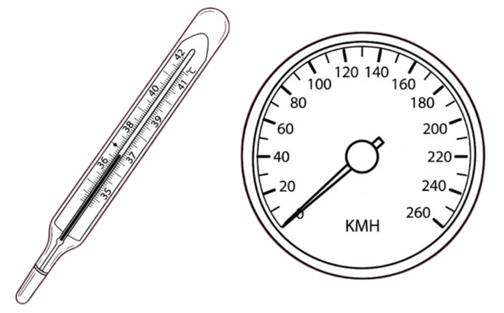
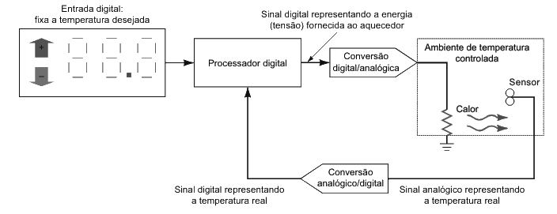
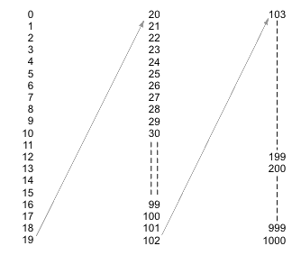
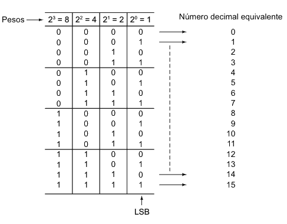

Professor: Gabriel Soares Baptista
Para compreender o que são sistemas digitais e a diferença fundamental em relação aos sistemas analógicos, devemos observar um dos dispositivos digitais mais influentes da história: o telégrafo.
Este sistema eletromecânico revolucionou a comunicação à distância e serviu de base para o surgimento da telefonia, da internet e de grande parte do que hoje entendemos como circuitos digitais.
A estrutura do telégrafo consistia basicamente em uma bateria, uma chave de contato (que permanecia normalmente aberta, impedindo a passagem de corrente) e um longo cabo que se estendia até uma "matraca" eletromagnética.
Quando você pressionava a chave, o circuito era completado, permitindo que a corrente da bateria fluísse pelo cabo.
É fundamental notar os dois estados do sistema: a chave e a matraca para baixo, ou a chave e a matraca para cima.
Para transmitir qualquer palavra ou número, o telégrafo utilizava dois símbolos distintos: pulsos elétricos curtos e longos (pontos e traços do código Morse). Isto descreve uma representação digital da informação.
O diagrama de tempo abaixo mostra em qual estado (1 ou 0) o sistema está em qualquer momento e registra o tempo exato em que uma mudança ocorre.
Sistema Digital: Combinação de dispositivos projetados para manipular informação lógica ou quantidades físicas representadas no formato digital. As quantidades assumem apenas valores discretos.
Exemplos: Computadores, calculadoras, equipamentos de áudio/vídeo digital.
Sistema Analógico: Dispositivos que manipulam quantidades físicas representadas na forma analógica. As quantidades podem variar ao longo de uma faixa contínua de valores.
Exemplos: Alto-falante de rádio (amplitude do sinal pode ter qualquer valor entre zero e o máximo).
Na representação analógica, uma quantidade é representada por um indicador proporcional continuamente variável.
Exemplos clássicos:
A característica fundamental é a variação ao longo de uma faixa contínua de valores.

Nas representações digitais, as quantidades são representadas por símbolos denominados dígitos. O relógio digital, por exemplo, não varia continuamente; ele varia em saltos ou degraus de um em um minuto.
A maior diferença entre as grandezas pode ser expressa como:
Devido a essa natureza discreta, não há ambiguidade quando se faz a leitura de uma quantidade digital.
O mundo real é inerentemente analógico. Para aproveitar as vantagens digitais ao lidar com variáveis físicas (temperatura, pressão), são necessários quatro passos essenciais:
Neste exemplo de controle de temperatura:

Nós operamos utilizando números decimais, mas os sistemas digitais funcionam estritamente por meio de números binários.
O sistema hexadecimal atua como uma ferramenta para facilitar a manipulação matemática desses dados binários por nós, humanos.
Apesar de usarem bases diferentes, todos os três sistemas operam sob a mesma lógica posicional.
O sistema decimal (base 10) utiliza símbolos de a . É um sistema de valor posicional: o valor do dígito depende de sua posição.
Todo número é uma soma de produtos do valor de cada dígito pelo seu peso (potência da base):
A contagem sempre se inicia pelo zero. Soma-se até atingir a próxima posição de maior peso e recomeça-se com zeros nas posições anteriores.
A quantidade de números possíveis com dígitos é sempre a base elevada a . Em decimal com 2 dígitos: números ( a ).

O sistema decimal não é conveniente para hardware digital (exigiria 10 níveis de tensão). É muito mais simples projetar circuitos onde existam apenas dois níveis de tensão. Assim, usa-se a base 2.
Para ler as posições, as potências de $2$ à esquerda da vírgula são positivas e à direita, negativas. Efetua-se o somatório dos produtos pelo peso posicional.
Exemplo para $101,11_2$:
$$\begin{split} 101,11_{2} &= (1 \times 2^{2}) + (0 \times 2^{1}) + (1 \times 2^{0}) + (1 \times 2^{-1}) + (1 \times 2^{-2}) \\ &= 4 + 0 + 1 + 0,5 + 0,25 \\ &= 5,75_{10} \end{split}$$
Todo número sem base subscrita estará, por padrão, na base 10.
Para cada contagem sucessiva, adiciona-se $1$ ao bit menos significativo.
Nesse caso, o dígito fica zero e ocorre o vai-um para a próxima casa à esquerda.

O sistema hexadecimal utiliza a base 16. É extremamente útil para representar números binários de forma compacta.
Os símbolos incluem os dígitos de $0$ a $9$ e as letras de $A$ a $F$ ($A=10$, $B=11$, $C=12$, $D=13$, $E=14$, $F=15$).
Conversão para Decimal ($1A3,B_{16}$):
$$\begin{split} 1A3,B_{16} &= (1 \times 16^{2}) + (10 \times 16^{1}) + (3 \times 16^{0}) + \left(11 \times \frac{1}{16}\right) \\ &= 256 + 160 + 3 + 0,6875 \\ &= 419,6875_{10} \end{split}$$
Cada dígito hexadecimal é equivalente a um agrupamento exato de quatro dígitos binários.
| Hexadecimal | Decimal | Binário |
|---|---|---|
| 0 | 0 | 0000 |
| 1 | 1 | 0001 |
| 2 | 2 | 0010 |
| 3 | 3 | 0011 |
| 4 | 4 | 0100 |
| 5 | 5 | 0101 |
| 6 | 6 | 0110 |
| 7 | 7 | 0111 |
| Hexadecimal | Decimal | Binário |
|---|---|---|
| 8 | 8 | 1000 |
| 9 | 9 | 1001 |
| A | 10 | 1010 |
| B | 11 | 1011 |
| C | 12 | 1100 |
| D | 13 | 1101 |
| E | 14 | 1110 |
| F | 15 | 1111 |
Na contagem, cada dígito incrementado percorre de $0$ até $F$. O vai-um para a próxima casa só ocorre após o $F$.
Exemplos de sequência:
Com $N$ dígitos hexa, pode-se representar $16^N$ valores. Três dígitos cobrem de $000_{16}$ até $FFF_{16}$ (ou seja, $4096$ valores, de $0$ a $4095$).
No próximo capítulo, Conversão entre Bases, veremos como trabalhar ativamente na transformação de dados entre os sistemas numéricos específicos para esta disciplina, explorando os atalhos entre as bases 2 e 16. Além da conversão, veremos Códigos BCD, Código Gray e Códigos Alfanuméricos, aprendendo como cada sistema é utilizado e em quais cenários podem ser mais úteis para as suas atividades.